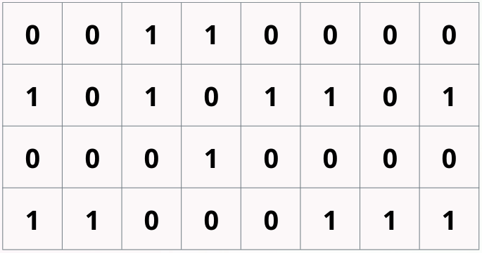

So I run searchcode.com, and its iteration over the last 10 years has been from PHP to Python almost to Java and finally to Go.
The whole time that has happened one thing has been constant, which was the use of the index engine, which was provided using Sphinx Search and then a forked version called Manticore.
This made me feel like a bit of a fraud, how can I claim to be a search guy without using my own index. So after the first covid lockdown in 2020, I was hiking with a mate I decided I would build my own index.
Searchcode itself indexes about 75 billion lines of code across 40 million projects pulled from github, gitlab, bitbucket, codeberg, sr.ht and such.
It handles about 22 RPS with some portion of those being search queries and the remainder being code view queries. It works out being about 2.6 million requests a day.
Note. I do not have a PhD in applied search, nor do I work in the space professionally. However on the internet nobody knows you are a dog. This is about how I built a index in Go, not how you should.
PSA: Licensing
If you are Australian (or German) you cannot put your code into public domain!
All code under AGPL-3.0 license
Searching code
Trigrams
searchcode -> sea
ear
arc
rch
chc
hco
cod
ode
So code search is in some ways easier than text, because you don't need to try to understand language in the way that you do when dealing with english, japanese or russian. Splitting on chinese or japanese words for example is painful.
You can solve this problem in code using whats known as trigrams, where you break the text apart into characters of 3 and index those. You can actually use any number you want for ngrams, but trigrams work best when indexing source code.
One catch with this is that you get false positives, some inputs generate the same ngrams despite being different. You also have terms with low cardinality such as repeated works in a line. So the letter p 100 times is no more useful than 3 of them.
Another issue is that you get more things to index bloating your posting list... what are posting lists? Well lets have a look at how to build an index
But have a look here, were one term searchcode is turned into 8 thinks we need to index.
line 64: caisson.go
// Trigrams given input splits according to trigram rules
// where we want to be as efficient as possible
func (ci *CaissonIndex) Trigrams(text string) []string {
var runes = []rune(text)
if len(runes) <= 2 {
return []string{}
}
ngrams := make([]string, len(runes)-2)
for i := 0; i < len(runes); i++ {
if i+3 < len(runes)+1 {
ngram := runes[i : i+3]
ngrams[i] = string(ngram)
}
}
return ngrams
}
When you look at the code for this you will notice I added logic to split in spaces first and then index things larger than 3. This avoids indexing spaces which reduces the size of the bloom filter.
Interesting fact, in profiling the single biggest bottleneck in indexing is the trigram code. If someone wants to profile and improve performance on it I would really appreciate it. It dominiates the indexing approach because the bit setting is close to free from a CPU point of view.
How to build an index
Inverted index. Most common way to do it.
map[string][]struct{}
map[string][]int64{}
Posting lists
Need to implement skip lists or compression on the posting lists at scale
Supports a positional index
A posting list is the slice of struct or int64 you see where it contains the document's that contain the term in the map.
A positional index is one that stores where the term was found in the document. This is really useful for phrase searches and ranking.
In theory you can then use the index to reconstruct the document entirely. One catch with this is that your index becomes larger than the thing you are indexing.
Skip lists are an interesting data structure worth looking up on wikipedia. They arent that hard to implement, but when you start adding compression to reduce the size they quickly become complex, and it becomes easy to tank your performance.
When done simply these are a bit of code you can had over to your cousin or most junior developer.
Trie
Typesense uses this, its also written in C++
Big problem is not friendly to GC due to the use of pointers (problem for Go)
Need to implement skip lists or compression on the posting lists at scale
Supports a positional index
I tried this, and the GC non friendly problem caused it to have massive delays while walking the pointers. I think it was seconds in GC when I tried it which was unacceptable.
I could have possibly done off heap tricks but I wanted to stick to normal Go because I am a mortal programmer.
So what about bitslice signatures?
Bloom filter
bitslice signatures are built on bloom filters. So whats a bloom filter?
In short a probablistic data structure, that you can use to test the existance of something. You add items, and can check if it was added. They never return false negatives, but they do occassionaly lie and report something being added when it was not.
So lets look at this example,
We have a 8 bit bloom filter, and hash two terms, golang and searchcode. Goland hashes to bit position 0 and searchcode to bit position 6. To add an item we do the hash, and then set the bit position to 1.
If I want to check if searchcode was added, I hash it again and probe the bit position. If set to 1 it means it was possibly added. If I want to check for the existance of awesome I could hash that and get the position 2 and if I probe that I can see it was never set so I know it was never added.
The lie part comes from the hash function, where it might hash to position 0. So if I was checking for the existance of "java" and it hashes to bit position 0 I would assume it was added. This is a false positive.
For hashing you can use any hash that returns an integer. FNV and FNVa work well for this being fast enough and providing enough distribution. Murmur3 is meant to be good but I found it slower.
Frequency Concious Bloom Filter
So hashing... While you can has terms a single time in a bloom filter, it turns out that you can reduce the false positive rate by having multiple hashes. If you do this dependant on the term input you end up with a Frequency Conscious Bloom Filter.
The reason is that rare terms need more hashes to avoid false positives.
To get the frequency for searchcode I just calculated the hash counts for every bit of code I found find and removed all the common ones. I then use a weight to determine how many hashes each term needs.
Its left as an exercise to yourselves to implement this, as I just hardcoded it to 3 hashes here.
Because trigrams are generally more common than words this is capped to about 5 hashes, with anything unknown getting a single hash.
BTW this is one of the things you need to do at a large enough scale to get the performence you need and is something I put into searchcode.
Advantages
Bloom filters have a lot going for them. They are compressed, getting down to 9 bits per term added if you do them right. They are also really simple to implement, and remain so.
Bloom filter search

So how to search over out bloom filter index? This represents 4 documents in our index. All indexed using an 8 bit bloom filter. We took in documents, turned them into trigrams, got the hash positions and set the bit.
So now we search...
Problems
So a few problems with this approach.
Problem is that each "bit" in this uses 1 byte under the hood, assuming we use a boolean to indicate the bit. A 8x overhead is unacceptable for most...
Another problem is that is that its slow... This comes down to how fetching bits out of memory using the CPU works. The slow part is not the & logic you use, but memory walking.
When you probe a single bit on any system you actually pull back 512 bits from RAM. A 512x overhead just to test a single bit! As a result on average you end up walking ALL the memory for your filter.
If you have a index thats 100 GB in size, using a modern CPU its going to take ~2 seconds to walk all that memory, and thats irespective of how many cores you have. You become memory bound.
This is one one of the reasons this as an approach fell out of favor in the 70's. It was only when Microsoft published a paper about bitfunnel showing how to improve this
Fixes
However in the 80's a smart person called Roberts noticed you could rotate the filter.
So we do that by turning the rows into columns. So each row used to represent a document, but now each column does.
With this done we only need to inspect the rows containing the bit positions of the query. So in this case 2 rows which is half the memory access.
We can then using out examples just row query bit positions 0 and 6 and then logically & them together. If they arent 0 then we have a positional match.
In this case we would get that the left most document remains as 1 meaning its a match. This reduces the amount of RAM we need to access by factor of about 200 for larger bloom filters.
Add
line 187: caisson.go
func Add(item []bool) error {
if len(item) != BloomSize {
return errors.New(fmt.Sprintf("expected to match size %d", BloomSize))
}
if currentBlockDocumentCount == 0 || currentBlockDocumentCount == DocumentsPerBlock {
bloomFilter = append(bloomFilter, make([]uint64, BloomSize)...)
currentBlockDocumentCount = 0
if currentDocumentCount != 0 {
currentBlockStartDocumentCount += BloomSize
}
}
for i, bit := range item {
if bit {
bloomFilter[currentBlockStartDocumentCount+i] |= 1 << currentBlockDocumentCount
}
}
currentBlockDocumentCount++
currentDocumentCount++
return nil
}
What this does is takes in boolean slice, checks if its the right size, then checks if we need to add a new
block IE another batch of 64 documents, and then loops over the input setting the correct bits.
Optimise
line 187: caisson.go
1001010000001111000001111001101110100011111111111111111111111101
0110111101101010111111111001001101110000000000010000100000000000
0000000000001000000000000000000000000000000000000000000000000000
0000000000001001000010110000001000100011111100000000000000000000
1000011100000000000010000001001000100000000000000000000000000000
0111011100000100000011110001000011000000000000000000000000000000
0001000000001000000010000001000100000000000000000000000000000000
0000001000001010101000010000001000001000000000000001000000000000
0100000000001011000000000100001000111100000000000000000000000000
0000001000011011001000001010100100100001111100000001010101011110
0001011100000100000001000101101110000010000010001010101010100011
0000101000000001000001000001000001011000000000000000000000000000
1111111111111111111111011011111101101011111111111111111111111111
0000000000001000001000010000000000110000001000000001100000001000
0000000000001000001010010000000010100010000111111110101010100001
0000000000001000000000010000011001100011111100000000000000000000
This is done so as to not waste memory. In searchcode its done by packing 64 documents into a bloom filter block or bucket.
So if a bloom filter had 16 bits, we keep 16 uint64's in a slice.
It would look like what you see, and you can print it out if you modify the code.
This ensures we are optimally using the space. Because we pack 64 documents into each bucket we end up using a single bit per location in the bloom filter. No 8x waste!
searchcode...
┌──────────────────┐ ┌──────────────────┐ ┌──────────────────┐
│ caisson ├─┬▶│ shard 512 bits ├┬─▶│ bucket-1 │
└──────────────────┘ │ └──────────────────┘│ └──────────────────┘
│ │
│ │ ┌──────────────────┐
│ ├─▶│ bucket-2 │
│ │ └──────────────────┘
│ │
│ │ ┌──────────────────┐
│ └─▶│ bucket-3 │
│ └──────────────────┘
│
│
│ ┌──────────────────┐ ┌──────────────────┐
└▶│ shard 1024 bits ├┬─▶│ bucket-1 │
└──────────────────┘│ └──────────────────┘
│
│ ┌──────────────────┐
├─▶│ bucket-2 │
│ └──────────────────┘
│
│ ┌──────────────────┐
└─▶│ bucket-3 │
└──────────────────┘
In searchcode its a little more in depth because it actually changes the size of the bloom filters based on the size of the document its indexing.
What happens is when a document is indexed, it breaks it into unique trigrams, and then finds a bloom filter where it will be stored with a target bit density. If the document has a small amount of trigrams it ends up in a smaller bloom filter of say 256 bits, and if larger it goes into a larger one up to 4096.
When the full 64 documents have been added to a bucket then in the case of a 256 bit bloom filter another 256 uint64's are appended on the end.
Where shards represent a different bloom filter size, say 512 of 2048 bits, and buckets exist as a single uint64 slice in a shard. They are split out logiclly here to help understanding.
Searching
line 20: caisson.go
func Search(queryBits []uint64) []uint32 {
var results []uint32
var res uint64
if len(queryBits) == 0 {
return results
}
for i := 0; i < len(bloomFilter); i += BloomSize {
res = bloomFilter[queryBits[0]+uint64(i)]
for j := 1; j < len(queryBits); j++ {
res = res & bloomFilter[queryBits[j]+uint64(i)]
if res == 0 {
break
}
}
if res != 0 {
for j := 0; j < DocumentsPerBlock; j++ {
if res&(1< 0 {
results = append(results, uint32(DocumentsPerBlock*(i/BloomSize)+j))
}
}
}
}
return results
}
The core search algorithm is as follows. This assumes a 2048 bit bloom filter, which is in effect a slice of uint64's in memory already populated.
I find this algorithm beautifully simple. We take in query positions for the search, so in the case of searching for "searchcode" we turn that into trigrams
then hash them using the same hash functions to get 6+ uint64's from 0 to whatever the filter is configured to be in a slice.
Whats really cool about this is that we jump potentially all of the bytes in a block if we hit that res == 0 condition quickly, avoiding us walking any memory at all! This is the state we want
to hit as often as possible.
Results when returned gives ids, which we can then use the idToFile to find the true id for this document.
Once we have these ideas its a matter of reaching out to our primary data store, pulling back the documents and processing from there.
Demo
This is meant to be interactive... I hope you have been following the code... And assuming nobody has crashed searchcode since I started talking here it is.
So you can search for all sorts of things. Where searchcode is a bit different is that while it can do exact matches its more useful looking for related things.
A good example being how to use gson with mongodb in java.
Or looking for random things. For example I know Chewys gorgonia has something to do with new tapes.
Thank You!
ChatGPT:
The main problem with using a bitfunnel bit slice signature approach for code search is that it would be very inefficient. This is because bitfunnel bit slice signatures are designed for searching short, text-based documents. Code, on the other hand, is much longer and more complex than text-based documents. This means that bitfunnel bit slice signatures would be very large and inefficient for storing code.
In addition, bitfunnel bit slice signatures are not very accurate. This is because they are probabilistic data structures. This means that there is a small chance that a bitfunnel bit slice signature will return a false positive. This is not a problem for text-based documents, but it can be a problem for code. This is because code is often very repetitive. This means that there is a high chance that a bitfunnel bit slice signature will return a false positive when searching for a particular trigram.
For these reasons, I would not recommend using a bitfunnel bit slice signature approach for code search. Instead, I would recommend using an inverted index.
Presentation located at https://boyter.org/static/golang-syd-25th-may/ or just go to boyter.org and I will link it up tomorrow.
Of course there is more to it than what you have, and a whole host of other problems id love to dive into someday. Things like duplication detection, highlighting, concurrent acces, and such.
Of course... probably nobody using searchcode cares that its running on a unique bloom filter trigram backed index with
ideas borrowed from bing. But I know... and now you do too. I hope you are able to take something out of this, or perhaps I nerd sniped you on a few interesting problems.